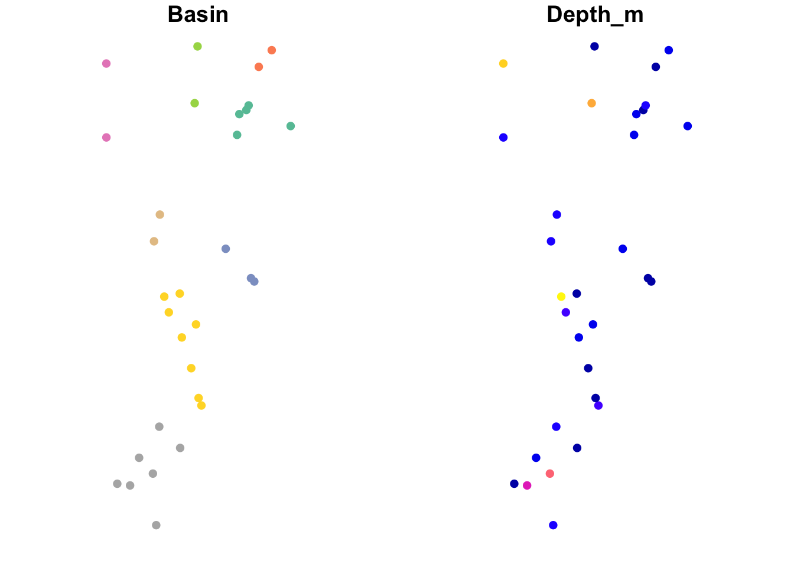
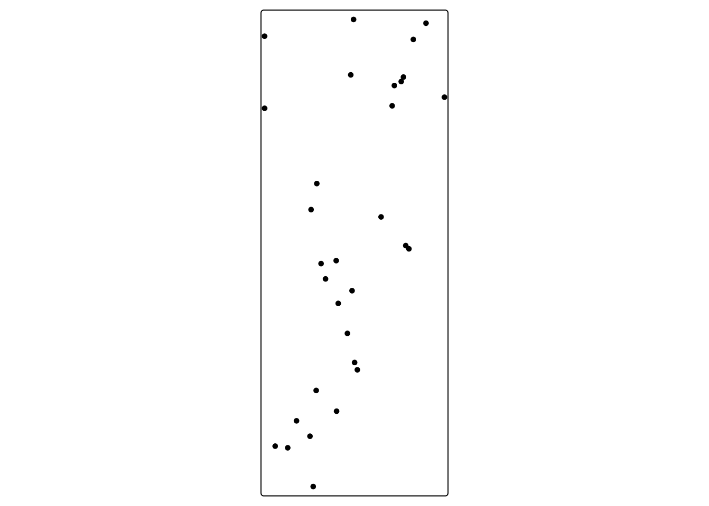
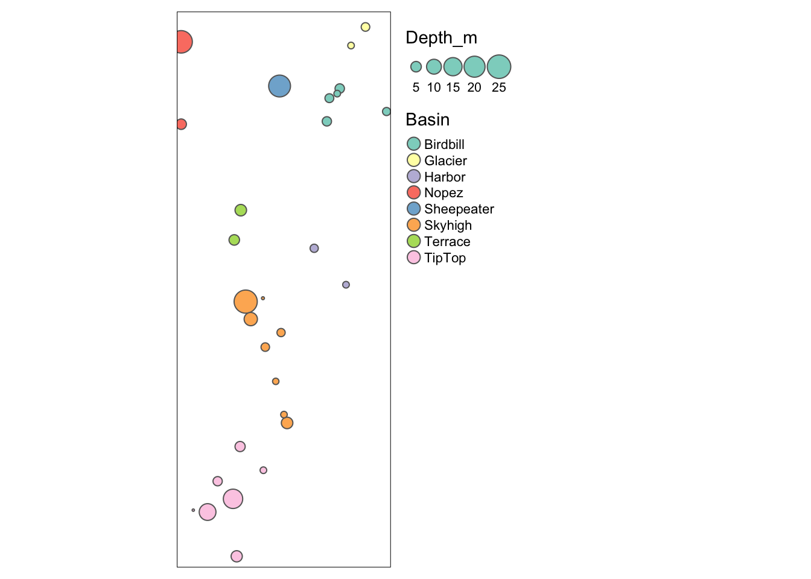
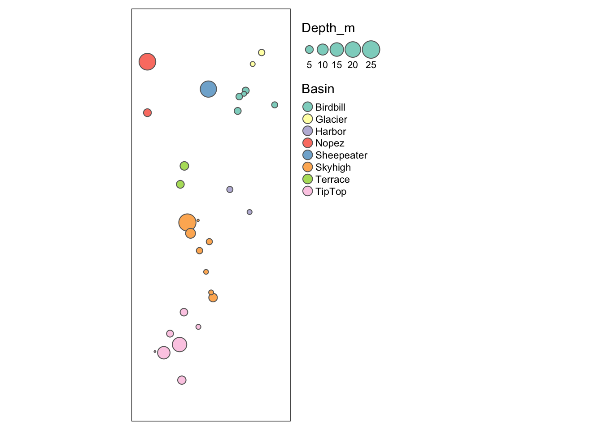

5.5 Bonus: ‘sf’ and ‘terra’
Helene Wagner
1. Overview
This bonus vignette uses the packages sf, terra, and tmap, yet it can only scratch the surface. For a thorough introduction to geocomputation with R, see this excellent Gitbook: https://geocompr.robinlovelace.net/index.html.
a. Goals
This bonus material expands the Worked Example to show:
- How to import and export ESRI shapefiles.
- Compatibility with packages
spandraster - How to create static and interactive maps with
tmap. - How to plot a categorical raster with a predefined color scheme.
Try modifying the code to import your own data!
2. Import and export ESRI shapefiles
ESRI shapefiles are a widely used data format for sharing geospatial vector data. With the package sf, they are easy to import and export. Here’ we will export Sites.sf to a shapefile and then import it again.
5.5.0.1 a. Export ‘sf’ object to shapefile
The following code may produce a warning that column names were abbreviated. It writes the component files for the ESRI shapefile into the pre-existing folder output (the first line will create it if does not exist yet). Remember to remove the hashtags ‘#’ to un-comment the code before running it.
The argument delete_dsn specifies whether any existing file with the same name should be deleted first (i.e., overwritten).
data(ralu.site)
#if(!dir.exists(here("output"))) dir.create(here("output"))
#dir.create(here("output/Sites"))
#st_write(ralu.site, here("output/Sites/Sites.shp"), delete_dsn = TRUE)Navigate to the Sites folder in the output folder (Files tab). You should now see four component files of the shapefile. These four files are required parts of the shapefile, always keep (or share) them together! Some shapefiles will have additional, optional component files.
- Sites.dbf
- Sites.prj
- Sites.shp
- Sites.shx
3. Compatibility with sp and raster objects
The packages sf and terra recently replaced the older packages sp and raster. You may still encounter code that requires objects from these packages. Here we show how to convert between sf and sp, and between terra and raster. The conversion is easy, though please note that sp objects are S4 objects.
5.5.0.3 a. Converting between sf and sp
It is easy to convert an sf object into a Spatial object of package sp, using the function as_Spatial of the sf package. For point data, the resulting class will be a SpatialPointsDataFrame.
## class : SpatialPointsDataFrame
## features : 31
## extent : 686908.5, 690890.1, 4994089, 5004435 (xmin, xmax, ymin, ymax)
## crs : +proj=utm +zone=11 +datum=NAD83 +units=m +no_defs
## variables : 17
## names : SiteName, Drainage, Basin, Substrate, NWI, AREA_m2, PERI_m, Depth_m, TDS, FISH, ACB, AUC, AUCV, AUCC, AUF, ...
## min values : AirplaneLake, ClearCreek, Birdbill, Cobble, Lacustrine, 0, 0, 0, 0, 0, 0, 0, 0, 0, 0, ...
## max values : WelcomeLake, WilsonCreek, TipTop, Silt, Riverine_UpperPerennial_UnconsolidatedBottom, 353898.1, 4312.9, 24.3, 20, 1, 0.11, 0.817, 0.463, 0.817, 1, ...We can convert the Spatial object back to an sf object with the function st_as_sf of the sf package:
## Simple feature collection with 31 features and 17 fields
## Geometry type: POINT
## Dimension: XY
## Bounding box: xmin: 686908.5 ymin: 4994089 xmax: 690890.1 ymax: 5004435
## Projected CRS: +proj=utm +zone=11 +datum=NAD83 +units=m +no_defs
## First 10 features:
## SiteName Drainage Basin Substrate
## 1 AirplaneLake ShipIslandCreek Sheepeater Silt
## 2 BachelorMeadow WilsonCreek Skyhigh Silt
## 3 BarkingFoxLake WaterfallCreek Terrace Silt
## 4 BirdbillLake ClearCreek Birdbill Sand
## 5 BobLake WilsonCreek Harbor Silt
## 6 CacheLake WilsonCreek Skyhigh Silt
## 7 DoeLake WilsonCreek Skyhigh Silt
## 8 EggWhiteLake WilsonCreek Skyhigh Silt
## 9 ElenasLake ShipIslandCreek Sheepeater Sand
## 10 FawnLake WilsonCreek Skyhigh Silt
## NWI AREA_m2 PERI_m Depth_m TDS FISH ACB AUC
## 1 Lacustrine 62582.2 1142.8 21.64 2.5 1 0 0.411
## 2 Riverine_Intermittent_Streambed 225.0 60.0 0.40 0.0 0 0 0.000
## 3 Lacustrine 12000.0 435.0 5.00 13.8 1 0 0.300
## 4 Lacustrine 12358.6 572.3 3.93 6.4 1 0 0.283
## 5 Palustrine 4600.0 321.4 2.00 14.3 0 0 0.000
## 6 Palustrine 2268.8 192.0 1.86 10.9 0 0 0.000
## 7 Lacustrine 13034.9 463.2 6.03 10.0 1 0 0.415
## 8 Palustrine 4544.5 291.9 3.30 2.4 0 0 0.000
## 9 Palustrine 0.0 0.0 0.00 0.0 0 0 0.000
## 10 Palustrine 3865.9 237.7 1.98 3.6 0 0 0.000
## AUCV AUCC AUF AWOOD AUFV geometry
## 1 0.000 0.411 0.063 0.063 0.464 POINT (688816.6 5003207)
## 2 0.000 0.000 1.000 0.000 0.000 POINT (688494.4 4999093)
## 3 0.000 0.300 0.700 0.000 0.000 POINT (687938.4 5000223)
## 4 0.000 0.283 0.717 0.000 0.000 POINT (689732.8 5002522)
## 5 0.000 0.000 0.500 0.000 0.500 POINT (690104 4999355)
## 6 0.000 0.000 0.556 0.093 0.352 POINT (688742.5 4997481)
## 7 0.171 0.585 0.341 0.000 0.073 POINT (688962.4 4996675)
## 8 0.047 0.047 0.686 0.209 0.058 POINT (688539.3 4998146)
## 9 0.000 0.000 0.000 0.000 0.000 POINT (688878.7 5004435)
## 10 0.000 0.000 1.000 0.000 0.000 POINT (688901.5 4996837)5.5.0.4 b. Converting between terra and raster
To convert a SpatRaster (terra) with multiple layers into RasterStack of the package raster, we use the function stack of the raster package:
RasterMaps <- rast(system.file("extdata/covariates.tif", package="GeNetIt"))
RasterMaps.r <- raster::stack(RasterMaps)
RasterMaps.r ## class : RasterStack
## dimensions : 426, 358, 152508, 6 (nrow, ncol, ncell, nlayers)
## resolution : 30, 30 (x, y)
## extent : 683282.5, 694022.5, 4992833, 5005613 (xmin, xmax, ymin, ymax)
## crs : +proj=utm +zone=11 +datum=NAD83 +units=m +no_defs
## names : cti, err27, ffp, gsp, hli, nlcd
## min values : 8.429851e-01, 3.906551e-02, 0.000000e+00, 2.270000e+02, 1.014000e+03, 1.100000e+01
## max values : 23.7147598, 0.7637643, 51.0000000, 338.0696716, 9263.0000000, 95.0000000To convert a single layer into a RasterLayer of the package raster, we would use the function raster:
## class : RasterLayer
## band : 6 (of 6 bands)
## dimensions : 426, 358, 152508 (nrow, ncol, ncell)
## resolution : 30, 30 (x, y)
## extent : 683282.5, 694022.5, 4992833, 5005613 (xmin, xmax, ymin, ymax)
## crs : +proj=utm +zone=11 +datum=NAD83 +units=m +no_defs
## source : covariates.tif
## names : nlcd
## values : 11, 95 (min, max)To convert from a RasterLayer (package raster) to a SpatRaster (package terra), we use the function rast of the terra package:
## class : SpatRaster
## size : 426, 358, 1 (nrow, ncol, nlyr)
## resolution : 30, 30 (x, y)
## extent : 683282.5, 694022.5, 4992833, 5005613 (xmin, xmax, ymin, ymax)
## coord. ref. : +proj=utm +zone=11 +datum=NAD83 +units=m +no_defs
## source : covariates.tif
## name : nlcd
## min value : 11
## max value : 95We can use the same function to convert from a RasterStack (package raster) to a SpatRaster with multiple layers (package terra):
## class : SpatRaster
## size : 426, 358, 6 (nrow, ncol, nlyr)
## resolution : 30, 30 (x, y)
## extent : 683282.5, 694022.5, 4992833, 5005613 (xmin, xmax, ymin, ymax)
## coord. ref. : +proj=utm +zone=11 +datum=NAD83 +units=m +no_defs
## source : covariates.tif
## names : cti, err27, ffp, gsp, hli, nlcd
## min values : 0.8429851, 0.03906551, 0, 227.0000, 1014, 11
## max values : 23.7147598, 0.76376426, 51, 338.0697, 9263, 954. Plotting spatial data with tmap
a. Plot geometry
The package sf makes a clear distinction between the geometry information (spatial coordinates: where in space) and attribute information (what’s at these locations). Hence, when using the function plot with sf objects, we need to decide what we want to plot: geometry or attributes?
To plot the geometry, we use function st_geometry to extract the geometry information from the sf object:

b. Plot attributes in space
If we don’t extract the geometry, then R will assume that we want to plot attribute data. The default is to plot the first ten attributes.
Here we set the point character pch to a filled circle, which is symbol #16. With cex=2, we define the symbol size.
For an overview of ‘pch’ symbol numbers, and colors, check: http://vis.supstat.com/2013/04/plotting-symbols-and-color-palettes/
## Warning: plotting the first 10 out of 17 attributes; use max.plot = 17 to plot
## all
This is pretty cool! Let’s have a closer look at two of the variables.
Basin(left): this is a factor, and each factor level is assigned a different color.Depth_m(right): this is a quantitative variable, and R automatically uses a color ramp (from blue to pink to orange) to indicate variation in the values.
Note: To learn about options for the plot function for sf objects, access the help file by typing ?plot and select ‘Plot sf object’.

c. Create a static bubble plot with ‘tmap’
The tmap package (for plotting thematic maps) is a great tool for plotting maps. It is based on the grammar of graphics concepts, which take a bit of getting used to. Most importantly, we need the following parts:
tmap_mode("plot"): to plot a static map (default)tm_shape: this function defines the data to be used.tm_sf: this function defines what information should be plotted and how.
Note: for the second part, there are many other functions for various types of data.
If we use tm_sf without arguments (i.e., with the default settings), we get a plot of the geometry:

We can indicate an attribute to plot it. Also, there is a special function tm_bubbles for bubble plots. Here we define the bubble size by wetland depth and bubble color by basin. In addition, we specify that the legend should be placed outside of the plot, on the right.
tmap_mode("plot")
tm_shape(Sites.sf_c) + tm_bubbles(size="Depth_m", col="Basin") +
tm_layout(legend.outside=TRUE, legend.outside.position="right") 
Let’s make the boundary box (map extent) a little larger so that the symbols are not cut off. First we extract the boundary box of Sites.sf_c and save it as Bbox.
## xmin ymin xmax ymax
## 686908.5 4994089.3 690890.1 5004435.0Then we define the range along x and y coordinates (delta.x, delta.y), set a zoom factor (Zoom) and add that fraction of the range on each side. Unfortunately, there is no dedicated function for this so we do this manually:
delta.x <- Bbox[3] - Bbox[1]
delta.y <- Bbox[4] - Bbox[2]
Zoom <- 0.1
Bbox2 <- Bbox + c(-delta.x, -delta.y, delta.x, delta.y) * Zoom
Bbox2## xmin ymin xmax ymax
## 686510.4 4993054.7 691288.2 5005469.6Now we add the boundary box information as an argument bbox in function tm_shape.
Note that we write the figure into an object, Map1, then plot the Map1. This will help e.g. with exporting the map, or we can later add more layers to this map object with +.
tmap_mode("plot")
Map1 <- tm_shape(Sites.sf_c, bbox=Bbox2) +
tm_bubbles(size="Depth_m", col="Basin") +
tm_layout(legend.outside=TRUE, legend.outside.position="right")
Map1
d. Create an interactive bubble plot with ‘tmap’
Creating an interactive map with a basemap from the internet is not difficult. Un-comment the code below by removing the hashtag (#) and run it. Go ahead and play with the interactive map!
By default, R will include an interactive menu to toggle between “Esri.WorldGrayCanvas”, “OpenStreetMap”, and “Esri.WorldTopoMap”. We can add more base maps to this selection by providing a list of servers with the function tm_basemap. The first one listed will be shown by default.
#tm_shape(Sites.sf_c) + tm_bubbles(size="Depth_m", col="Basin") +
#tm_basemap(server = c("Esri.WorldTopoMap", "Esri.WorldGrayCanvas",
# "OpenStreetMap", "OpenTopoMap", "Esri.WorldImagery"))Let’s make a few more changes:
- We change the symbolization to fixed-size, filled circles with a black border, and plot them on top of filled circles that indicate the basin. Note that although both attributes are in the same dataset
Sites.sf_c, we need to include a data statement for each attribute we add to the map (i.e., map layer), usingtm_shape(Sites.sf). - We include the argument
bbox=Bbox2for at least one of the map layers. This is not needed for the interactive map but will look better when exporting it as a static map.
Un-comment the code below by removing the hashtag (#) and run it. Go ahead and toggle between the base maps in the map below! Different base maps are suitable for different situations (data type, symbol type, size of study area) and purposes.
#tmap_mode("view")
#Map2 <- tm_shape(Sites.sf_c, bbox=Bbox2) + tm_sf("Basin", size=2, border.col="black") +
# tm_shape(Sites.sf_c) + tm_sf(size=0.8, col="Depth_m",
# palette = "Blues", border.col="black") +
# tm_basemap(server = c("Esri.WorldTopoMap", "Esri.WorldGrayCanvas",
# "OpenStreetMap", "OpenTopoMap", "Esri.WorldImagery"))
#Map2e. Export maps
Save the map to folder output:
- Remember to un-comment the code by removing the hashtags (#).
- Interactive map saved to
htmlfile. This includes all the features of the interactive mapMap2. - Static map saved to
pngfile, with height = 7 inches. This drops the base map and retains only the symbolized data.
Go ahead and check out the two files!
#if(!dir.exists(here("output"))) dir.create(here("output"))
#tmap_save(Map1, here::here("output/StaticMap.png"), height=7)
#tmap_save(Map2, here::here("output/InteractiveMap.html"))Navigate to the folder output (Files tab) and check out the saved maps! For the dynamic map (Map2), select “open in a web browser”. You can share this file with others, who can open it in their browser and interact with the map without access to R or your data!
5. Plot a categorical map with predefined color scheme
a. Define the raster attribute table
Now to a more tricky topic. Recall that the last raster layer in the Worked Example, nlcd, contains categorical land cover data that are coded numerically. The terra package actually misinterpreted them as numeric data.
Let’s extract the categorical raster layer into a new object ‘NLCD’. We can use as.factor to tell R that this is a categorical raster layer.
Here, we save the (numerical) raster layer nlcd as categorical raster (factor) NLCD.
RasterMaps <- rast(system.file("extdata/covariates.tif", package="GeNetIt"))
NLCD <- terra::as.factor(RasterMaps$nlcd)What values occur in the raster? These are codes for cover types.
Here is a description of the cover types: https://www.mrlc.gov/data/legends/national-land-cover-database-2019-nlcd2019-legend
## ID nlcd
## 1 11 11
## 2 12 12
## 3 31 31
## 4 42 42
## 5 52 52
## 6 71 71
## 7 90 90
## 8 95 95We will import a table with predefined colors (using hex color code) from the file Colortable_LULC.csv that is included with LandGenCourse.
This list has more entries (e.g., 21-24) than we need, because not all US land cover classes occur in the study area.
Check in the table below that the colors and cover types are stored as ‘character’. (Luckily, since R 4.0, this is the new default for function read.csv). If they were coded as factors that could lead to errors later on.
ColTab <- read.csv(system.file("extdata", "Colortable_LULC.csv",
package = "LandGenCourse"), header=TRUE)
ColTab## value color attribute
## 1 11 #456DA8 Open Water
## 2 12 #E6EEF9 Perennial Ice/Snow
## 3 21 #E1CBCD Developed, Open Space
## 4 22 #DC9786 Developed, Low Intensity
## 5 23 #F40100 Developed, Medium Intensity
## 6 24 #B00206 Developed, High Intensity
## 7 31 #B2AEA3 Barren Land (Rock/Sand/Clay)
## 8 41 #6BA95C Deciduous Forest
## 9 42 #16692E Evergreen Forest
## 10 43 #B9CA8F Mixed Forest
## 11 51 #AD9439 Dwarf Scrub
## 12 52 #D5B883 Shrub/Scrub
## 13 71 #EDEFCA Grassland/Herbaceous
## 14 72 #D3D27C Sedge/Herbaceous
## 15 73 #A5CD53 Lichens
## 16 74 #88B8A1 Moss
## 17 81 #DED73E Pasture/Hay
## 18 82 #AD722C Cultivated Crops
## 19 90 #BED8F6 Woody Wetlands
## 20 95 #6EA5C4 Emergent Herbaceous WetlandsWe join this list with the list of factor levels of NLCD to create a raster attribute table (RAT). An RAT is a table that contains attributes for each distinct value in a raster.
- Use function
left_jointo extract the corresponding row fromColTabfor each row inLevels(NLCD) - Indicate which columns should be used to match the rows:
by=c("ID"="value"). Note thatIDis of typenumericwhereasnlcdischaracter. Asvalueis numeric, we match it withID. - Copy the values from variable
attributeto variablenlcd - Select the variables that we will need.
RAT <- dplyr::left_join(levels(NLCD)[[1]], ColTab, by=c("ID"="value")) %>%
mutate(nlcd=attribute) %>%
dplyr::select(ID, nlcd, color)We replace the list of levels by the RAT:
## class : SpatRaster
## size : 426, 358, 1 (nrow, ncol, nlyr)
## resolution : 30, 30 (x, y)
## extent : 683282.5, 694022.5, 4992833, 5005613 (xmin, xmax, ymin, ymax)
## coord. ref. : NAD83 / UTM zone 11N (EPSG:26911)
## source : covariates.tif
## categories : nlcd, color
## name : nlcd
## min value : Open Water
## max value : Emergent Herbaceous Wetlands5.5.0.5 b. Plot the map with terra::plot
Now we can plot the map with the predefined color palette, using the plot function for SpatRaster objects:

5.5.0.6 c. Plot the map with tmap
- We first define the dataset with
tm_shape - With
tm_raster, we telltmapthat we want to plot raster valuesstyle="cat"tellstmapto interpret values as categoriespalettedefines the colorslabelsdefines the labels to be used for the categoriestitledefines the legend caption for the categories
- With tm_layout, we tell tmap where to place the legend (outside to the right of map)
- With
tm_grid(lines=FALSE)we telltmapto show the coordinates along x and y axes but to suppress grid lines that would be drawn on top of the map (change it to TRUE to see the effect)
Map3 <- tm_shape(NLCD) +
tm_raster(style="cat", palette=RAT$color, labels=RAT$nlcd,
title="Land cover") +
tm_layout(legend.outside=TRUE, legend.outside.position="right") ## ## ── tmap v3 code detected ───────────────────────────────────────────────────────## [v3->v4] `tm_raster()`: instead of `style = "cat"`, use col.scale =
## `tm_scale_categorical()`.
## ℹ Migrate the argument(s) 'palette' (rename to 'values'), 'labels' to
## 'tm_scale_categorical(<HERE>)'
## [v3->v4] `tm_raster()`: migrate the argument(s) related to the legend of the
## visual variable `col` namely 'title' to 'col.legend = tm_legend(<HERE>)'
Let’s beef it up a bit. We can do so by adding layers to Map3:
- To add an additional layer with the sampling sites to the map, we define the data for the layer with
tm_shape. - We define how the points should be symbolized with
tm_symbols. - We add a North arrow with
tm_compass, using default settings. - We add a scale bar with
tm_scale_barand set the background to a semitransparent (bg.alpha=0.5) light gray (bg.color="lightgray").
Map4 <- Map3 + tm_shape(Sites.sf_c) +
tm_symbols(size=0.4, col="yellow", border.col="red") +
tm_compass() + tm_scale_bar(bg.color="lightgray", bg.alpha=0.5)## ## ── tmap v3 code detected ───────────────────────────────────────────────────────## [v3->v4] `symbols()`: use 'fill' for the fill color of polygons/symbols
## (instead of 'col'), and 'col' for the outlines (instead of 'border.col').
## ! `tm_scale_bar()` is deprecated. Please use `tm_scalebar()` instead.
## This message is displayed once every 8 hours.
This time, we’ll export the map to a PDF file.